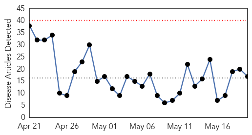

Measles
30-Day Web Trend
0 alerts, 0 warnings

30-Day Twitter Trend
0 alerts, 0 warnings

Article Locations


Article Confidences

Top Articles:
- 0.983
- Thousands At Risk After Contagious Paramedic Visits Hospitals, Tourist Site
- 0.982
- Measles case confirmed for Gold Coast following Brisbane paramedic infected
- 0.934
- Queensland Ambulance Service paramedic tests positive to measles
- 0.929
- Tourists at risk in Queensland measles outbreak
- 0.871
- Fairfax County Health Officials Investigating Confirmed...
- 0.869
- Taipei duty-free shop staff ...｜Society｜WCT
- 0.833
- People in Fairfax County, D.C. may have been exposed to measles patient
- 0.776
- European Public Policies Reduce Health Care Access, Says Report
- 0.657
- Measles jabs for all ambos proposed
- 0.648
- Officials investigating measles case, possible exposure to others in DC and Fairfax County - Story
Top Tweets:
-
No tweets found for May 20, 2015
Influenza
30-Day Web Trend
0 alerts, 0 warnings

30-Day Twitter Trend
3 alerts, 0 warnings

Article Locations
Article Confidences

Top Articles:
- 0.992
- Avian flu vaccine development: KSU
- 0.977
- K-State researchers developing bird flu vaccines
- 0.967
- Lifelong flu jab steps closer as researchers reveal importance of immune cell memory
- 0.953
- Researchers make H5N1 H7N9 vaccines
- 0.895
- Indiana warns backyard chicken farmers of avian flu
- 0.851
- Deadly Dog Flu Strain Confirmed in Georgia
- 0.751
- May 19, 2015 Archives
- 0.751
- May 19, 2015 Archives
- 0.751
- May 19, 2015 Archives
- 0.751
- May 19, 2015 Archives
- 0.743
- Dog flu confirmed in metro Atlanta dog
- 0.703
- Pennsylvania bans poultry competitions as precaution against bird flu
- 0.688
- FOUR PROBABLE CASES OF HIGHLY PATHOGENIC AVIAN INFLUENZA IN BUENA VISTA AND SIOUX COUNTIES
- 0.666
- Fowl competitions at fairs statewide banned due to bird flu threat
- 0.660
- Vets confirm no vaccine for dog flu found in Atlanta
- 0.631
- Summer Brings Fun in the Sun but Threats Lurk Beneath the Water's Surface
- 0.562
- Bird Flu Is Slamming Factory Farms But Sparing Backyard Flocks. Why?
Top Tweets:
-
No tweets found for May 20, 2015